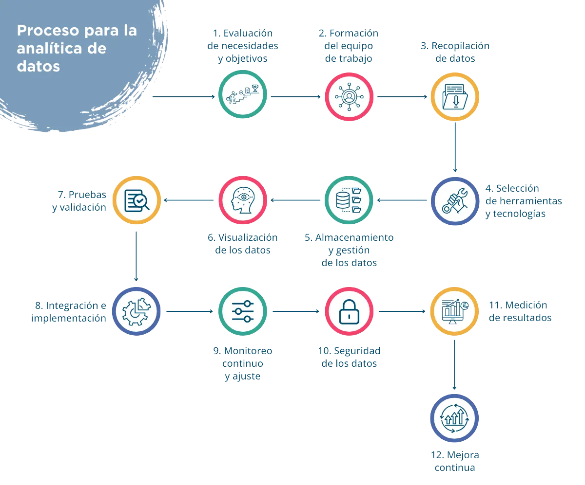

build Introducción
El actual contexto económico mundial exige a las pequeñas y medianas empresas una transformación digital.
La analítica de datos emerge como una alternativa viable y confiable en el proceso de extraer, transformar, analizar y comunicar información a partir de grandes volúmenes de datos.
El proceso permite descubrir patrones, tendencias, correlaciones y anomalías en los datos, así como generar conocimiento para apoyar a las pymes en la toma de decisiones.
Los conceptos fundamentales para entender y aplicar la analítica de datos son:
- El ciclo de vida de un proyecto de analítica de datos
- Las fuentes y tipos de datos
- Las herramientas y lenguajes de programación para el manejo y el análisis de datos
- Los métodos estadísticos y matemáticos para describir y explorar los datos
- Los modelos predictivos y prescriptivos para inferir y optimizar los resultados
- Las formas de visualizar y presentar los hallazgos y las recomendaciones
Así, las pymes pueden aprovechar esta información para personalizar sus productos y servicios, mejorar la experiencia del cliente y aumentar la eficiencia.
troubleshoot ¿Qué es la analítica de datos?
1 Definición
Analítica de datos es el proceso de extraer, transformar, analizar y comunicar información a partir de grandes volúmenes de datos. Se aplica en diversos campos y sectores, como la salud, la educación, el marketing, la banca, el deporte y muchos otros campos principalmente porque permite descubrir patrones, tendencias, correlaciones y anomalías en los datos, así como generar conocimiento para apoyar la toma de decisiones basada en evidencias.
2 El ciclo de vida de los datos
2.1. ¿Qué son los datos?
Los datos representan un fragmento de una cantidad, medida, descripción o palabra, que son agrupados o clasificados de una determinada manera para generar información. Los datos son útiles una vez que han sido procesados según el objetivo que se persiga.
2.2. El ciclo de vida de los datos
Creación o generación de datos
La generación de los datos puede darse a partir de los procesos inherentes a las pymes. De esta forma, los datos pueden provenir de fuentes primarias y fuentes secundarias. Las fuentes primarias contienen información original que ha sido publicada por primera vez y que no ha sido filtrada, interpretada o evaluada, son producto de una investigación, de una encuesta directa o de una actividad eminentemente creativa. Las fuentes secundarias contienen información publicada que ha sido recopilada, filtrada, interpretada o evaluada.
Almacenamiento
El almacenamiento es una parte importante del ciclo de vida de los datos, pues éstos se almacenan en medios magnéticos, ópticos o mecánicos que los registran y preservan. Es recomendable resguardar los datos de forma digital, en la nube o en servidores de almacenamiento físico, dependiendo de las necesidades y preferencias de cada pyme. Además, el almacenamiento de datos permite proteger los datos contra la pérdida debido a desastres, fallos o fraudes. Una práctica recomendable para evitar la pérdida de datos es la creación de una copia de seguridad. Así, la fase de almacenamiento de datos es crucial para garantizar que los datos estén disponibles para su uso posterior y para protegerlos contra pérdidas o daños. Para ello es importante identificar las herramientas útiles para almacenar los datos, estos sistemas los podrás consultar de manera detallada en el eje de Sistemas y herramientas de analítica, ubicados en la dimensión Datos y analítica.
Procesamiento
El procesamiento de datos es la fase en la que los datos crudos se transforman en información valiosa para las empresas. En general, el procesamiento de los datos consta de la organización, limpieza, verificación, análisis y conversión en formatos legibles, como gráficos o documentos. En esta fase, los datos pueden someterse a procesos como la integración, la depuración y la extracción, transformación y carga. La integración de datos consiste en combinar, consolidar y fusionar datos procedentes de múltiples fuentes para obtener una visión única y uniforme de los datos y facilitar la gestión, análisis y acceso eficaces. Esto se hace con el fin de facilitar el acceso, la comprensión y el uso de los datos. La depuración de datos consiste en una limpieza de datos, al modificar o eliminar datos que son incorrectos o poco relevantes para el análisis. La extracción, transformación y carga de datos es una operación que se ejecuta para recopilar datos de varios orígenes. Después, se transforman en datos útiles de acuerdo con las reglas del negocio y se cargan finalmente en un almacén de datos.
Análisis
En la fase del análisis de datos, estos se inspeccionan, limpian y transforman con el objetivo de resaltar información útil, para sugerir conclusiones y apoyo en la toma de decisiones. El análisis de datos tiene múltiples facetas y enfoques, que abarca diversas técnicas. Ante el actual aumento a gran escala de la generación de datos, el análisis de los datos resulta indispensable. De esta forma, el análisis de datos es un estudio que usa información en su estado natural, la analiza y extrae ideas útiles para la toma apropiada de decisiones dentro de una empresa.
Visualización
La visualización de datos es la fase en la que, se crean representaciones gráficas de la información obtenida, generalmente a través de las herramientas de visualización, que proporcionan una manera accesible de ver y comprender tendencias, valores atípicos y patrones en los datos. La visualización de datos faculta a los tomadores de decisiones para comprender el análisis mostrado de forma visual, para comprender fácilmente conceptos complejos.
Publicación
La fase de publicación tiene como fin poner a disposición de terceros las conclusiones o resultados obtenidos en la fase de análisis. En esta fase es indispensable tomar en cuenta la seguridad de los datos, lo que implica la implementación de medidas de seguridad física y lógica, así como políticas y procedimientos para garantizar que los datos estén protegidos. Adicionalmente, es muy relevante conocer y respetar los derechos vigentes respecto al manejo de los datos.
Utilización
Los resultados del análisis de los datos se deben poner a disposición de los usuarios, en esta fase es importante que dichos análisis sean utilizados para apoyar la toma de decisiones de la empresa.
Destrucción
La fase final del ciclo de vida de los datos es la destrucción de los datos. En esta fase, todas las copias de un elemento de datos se eliminan definitivamente de una empresa. El gran reto en esta fase es garantizar que los datos se hayan destruido correctamente. Esto implica que se haya seguido la normativa y procedimientos adecuados. Existen empresas dedicadas a esta tarea, que pueden gestionar los certificados de destrucción de datos que aseguran que los datos hayan sido eliminados de forma segura y permanente. En estos se detalla el proceso de destrucción, que incluye la fecha, hora y lugar en que se realizó, así como los métodos utilizados para garantizar la eliminación completa y segura de los datos.
Cada país tiene legislación acerca del manejo de los datos. Asimismo, existen normativas internacionales para la gestión y protección de los datos personales. Una de las más conocidas es el Reglamento General de Protección de Datos (RGPD), que es el reglamento europeo relativo a la protección de las personas físicas en lo que respecta al tratamiento de sus datos personales y a la libre circulación de estos datos en la Unión Europea (UE) y el Espacio Económico Europeo. Este reglamento establece un marco legal común para todos los países de la UE y el EEE, y se aplica a toda entidad que realice el tratamiento de datos personales de ciudadanos de la UE o el EEE, independientemente de dónde se encuentren su sede o sus servidores.
Existen otras normativas internacionales para la protección de los datos personales, como la Ley Federal de Protección de Datos en Suiza, adaptada al RGPD en 2018; la Personal Information and Electronic Documents Act en Canadá; la Ley de Protección de Datos Personales en Argentina; la Ley Cualificada de Protección de Datos Personales en Andorra; la Ley de Protección de la Privacidad en Israel; la Ley de Protección de Datos Personales en Uruguay, entre otras.
3 Analítica de los datos
Una vez definido el ciclo de vida de los datos, abordaremos con detalle la analítica de los datos. En este momento, cabe hacer algunas precisiones en el uso de los términos analítica de datos y análisis de datos, estos son dos términos que a menudo se usan indistintamente, pero en realidad tienen algunas diferencias.
Análisis de datos y analítica de datos
Calidad de los datos
Entre las técnicas para realizar el análisis exploratorio de datos están las técnicas de agrupación y reducción de dimensiones, que ayudan a crear visualizaciones gráficas de datos de alta dimensión que contienen muchas variables; la visualización univariante de cada campo en el conjunto de datos sin procesar, con estadísticas de resumen; visualizaciones bivariable y estadísticas de resumen que le permiten evaluar la relación entre cada variable en el conjunto de datos y la variable de destino; las visualizaciones multivariable, para mapear y comprender interacciones entre diferentes campos en los datos; la agrupación en clústeres de K-medias en el que los puntos de datos se asignan en K grupos y se agruparán en clústeres en la misma categoría, que se utiliza comúnmente en la segmentación del mercado, el reconocimiento de patrones y la compresión de imágenes.
Técnicas para predicciones
4 En conclusión
Aplicación de la analítica de datos
La analítica de datos se puede aplicar en diferentes áreas de las pymes, incluyendo ventas, marketing, finanzas, recursos humanos y operaciones. Para ello, se emplean diferentes herramientas y tecnologías, incluyendo el software de análisis y tecnologías de inteligencia artificial y aprendizaje automático. La analítica de datos permite a las empresas identificar nuevas oportunidades y aprovechar sus conocimientos para tomar decisiones estratégicas.
La ética y la privacidad en el análisis de datos son temas importantes que deben ser considerados por las empresas y organizaciones que manejan datos. Las normativas, la seguridad y la protección de datos son aspectos clave para garantizar el uso ético y responsable de los datos. Existen varias normativas internacionales y nacionales que regulan la gestión y protección de los datos personales.
Por otra parte, es importante implementar medidas de seguridad para proteger los datos personales contra el acceso no autorizado, la corrupción o el robo durante todo su ciclo de vida. Esto incluye la implementación de medidas de seguridad física y lógica, así como políticas y procedimientos para garantizar que los datos estén protegidos.
Referencias
Alvarado Caviedes, L. J. (2021). Aplicación de aprendizaje no supervisado al estudio de vigilancia tecnológica sobre los centros de investigación y desarrollo tecnológico de analítica de datos. Trabajo de grado presentado para optar el título de Ingeniero en Sistemas. Universidad Autónoma de Bucaramanga, Facultad de Ingeniería. Ingeniería en Sistemas. 111 p. Recuperado de repository.unab.edu.co
Andrade Peralta, H. (2022). Plan de negocios para la creación de una empresa de servicios de consultoría en analítica de datos para emprendimientos en la ciudad de Quito. [Tesis de Pregrado]. Quito: Universidad Tecnològica Indoamèrica. 130 p. https://repositorio.uti.edu.ec//handle/123456789/4703
Anzola Perez, B. V. E., & Atehortua Murillo, W. N. (2023). Relación de la analítica de datos en la productividad y crecimiento de las organizaciones. Universidad Libre. Seccional Cúcuta, Colombia. Recuperado de https://hdl.handle.net/10901/25270
Ariza Calderón, A. F., Castillo Talero, L. M., & Ore Aldana, K. H. (2020). Desarrollo de un prototipo funcional de una aplicación web, para la gestión de inventario en un conjunto de restaurantes de Bogotá, empleando técnicas de analítica de datos. Caso de estudio: restaurante" Mantiss". Trabajo de grado para optar el título de Ingeniero en Sistemas. Universidad Piloto de Colombia, Facultad de Ingeniería, Ingeniería en Sistemas. 188 p.
Barón, M. S., Cristancho, C. T., & Sanabria, J. G. (2020). Analítica de datos aplicada al estudio de deserción estudiantil en la Universidad Pedagógica y Tecnológica de Colombia-UPTC. Aglala, 11(1), 284-301.
Concepto.de (2023). Dato - Qué es, concepto, ejemplos y tipos de datos. (2023). Concepto. https://concepto.de/dato/
Gómez Ayala, A. D. (2020). Plan de negocios para la creación de una empresa de BI y analítica de datos dirigida a las pyme del sector Ecommerce en Colombia (Master's thesis, Universidad EAN).
González, G. A. A., Vásquez, M. G., Uribe, J. P. V., & Hernández, A. H. S. (2021). Big Data y las implicaciones en la cuarta revolución industrial-Retos, oportunidades y tendencias futuras. Revista Venezolana de Gerencia: RVG, 26(93), 33-47.
Google for Developers (2023). ¿Qué es el agrupamiento en clústeres? Recuperado de https://developers.google.com/machine-learning/clustering/overview?hl=es-419
IBM. (2023) ¿Qué es la ciencia de datos? https://www.ibm.com/es-es/topics/data-science
IBM. (2022). What is predictive Analytics?. https://www.ibm.com/topics/predictive-analytics
Pardo Carrillo, O. S., & Navarro Jaimes, D. M. (2020). Analítica de datos para toma de decisiones en las pymes y los micro establecimientos del sector turístico de Colombia 2015–2019.
Pozas, J. L. B. (2022). ¿Qué es la analítica de datos? Analizar y gestionar datos para tomar decisiones. Recuperado de cio.com.mx/que-es-la-analitica-de-datos-analizar-y-gestionar-datos-para-tomar-decisiones
Prada Orjuela, H. A. (2020). Diseño del proceso operacional de analítica de datos basado en el sistema de información de Academusoft. Universidad de Pamplona, Ingeniería de Sistemas. Electrónica, Eléctrica, Sistemas y Telecomunicaciones, Ingenierías y Arquitectura. Pamplona. Recuperado de repositoriodspace.unipamplona.edu.co
Rivera Jaimes, P. E. (2023). Diseño de plan de negocios para el desarrollo de un emprendimiento de negocio digital de consultoría en analítica de datos para Pymes en Colombia mediante la metodología Lean Startup Proyecto de grado para obtener el título de Magíster en Negocios Digitales en la modalidad Plan de Negocio. Universidad Autónoma de Bucaramanga, Facultad de Ciencias Económicas, Administrativas y Contables. Bucaramanga, Colombia. Recuperado de repository.unab.edu.co
The Black Box Lab. (2023). Machine Learning: Diferencias entre algoritmos de clasificación y regresión. Recuperado de theblackboxlab.com/2022/05/06/machine-learning-diferencias-entre-algoritmos-clasificacion-regresion/
Torres, K. (2017). Tendencia en la transformación digital para retailers: Omnicanalidad soportada por" Big data analytics" para mejorar la experiencia del cliente durante su recorrido: Análisis de adopción en Argentina. Tesis de Master in Business & Technology. Universidad de San Andrés. Escuela de Administración y Negocios. Recuperado de http://hdl.handle.net/10908/15475
loyalty Beneficios

account_tree Proceso

settings Herramientas
speaker_notes Glosario
speaker_notes {{item.Palabra}}
{{item.Significado}} {{item.Fuente}}